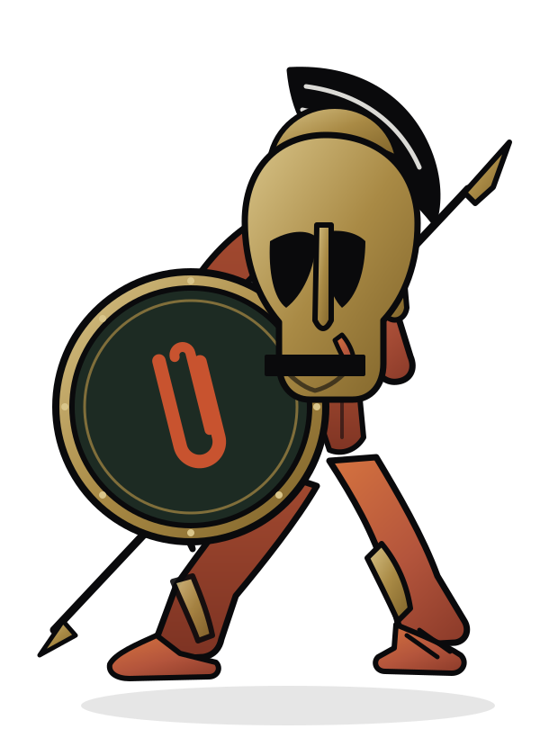

Recordings
One complaint,
four arrangements
- 01 Failed at 19:59 loop instrumental · synthesised live in the browser, no file at all
- 02 Attachment Too Large 2:50 boom-bap rap · male vocal · lyrics
- 03 Attachment Too Large (Blues) 2:48 twelve-bar AAB · slide guitar, harmonica, gravel voice
- 04 Attachment Too Large (Anthem) 2:48 arena pop · stomp-and-clap, gang vocals, key lift
Three of these are real recordings, generated from their own lyrics by the open-source ACE-Step model running remotely — prompts and parameters are stored next to each mp3. The first is not a file at all: it is the site's background music, built note by note in the browser every time it plays, with no percussion and no hiss, made to loop forever. Read the lyrics · download the rap